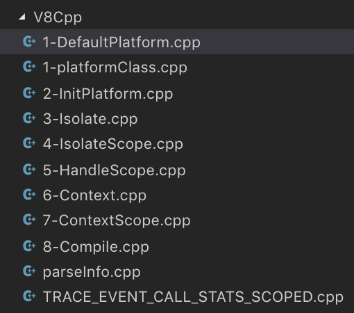

不知不觉都快月底了，看了看上一篇还是6号写的，惭愧惭愧，说好的坚持。为了证明没有偷懒(其实还是沉迷了一会dota2)，先上一个图自证清白。

基本上从初始化引擎，到Isolate、handleScope、Context一直到编译其实都有记录，但是实在是无从下手。虽说我的博客也没有什么教学意义，但是至少也需要有一个中心和结论。很遗憾，上述的每一步都并互有关联，也就是单独拿出来写毫无意义。而从整体架构来阐述，然后细化到这每一步，我又还没有到那个境界。因此，综合考虑下，决定先暂时放弃逐步解析，优先产出一些有意义的东西。
这一篇的内容属于V8中(或许是C++独有)使用比较普遍的一个技巧，很多模块都有使用。
当初在入门学JS的时候，到了ajax那里，跟着视频学封装。老师讲，如果参数过多，就包装成封装一个对象，这样只需要一个参数就可以了。当时我想着，一个对象也好麻烦啊，还不如封装的时候自己定义一下，如果传1，就代表是"GET"请求，传2，就代表"POST"等等。没想到，当初天真的想法，竟然在C++里面实现了。
下面开始正文，首先需要简单介绍一下枚举，话说各位用过TS的大佬应该都懂，或者接触过protobuf这些数据格式化库也有。枚举在很多语言中都有，定义简单说就是一系列的常量集合，通常用来做简单配置。如果没有指定值，那么就是0、1、2...依次增加，举例如下。
enum fruit {
apple,
banana,
pear,
orange = 5,
};
int main(int argc, const char * argv[]) {
cout << "enum apple is " << fruit::apple << endl;
cout << "enum banana is " << fruit::banana << endl;
cout << "enum pear is " << fruit::pear << endl;
cout << "enum orange is " << fruit::orange << endl;
return 0;
}这里我们定义了一个枚举类型，依次打印每一个值，会得到0、1、2，而第四个由于手动指定了值，所以会得到5。如果不去手动指定值，从JS的角度来看枚举有点类似于一个颠倒形式的数组，比如说定义['apple', 'banana', 'pear']，通过下标0、1、2可以取到对应的值，而枚举恰恰相反，通过枚举值取到的是"下标"。大部分简单的配置情况下，是不用去关心枚举具体的值。这样，关于枚举就介绍完了，很简单。
接下来，来看看V8是如何利用这个数据类型来实现参数配置。在对JS源码字符串的编译过程中，有一个类十分重要，负责记录String => AST的过程，名为ParseInfo，这里不去探究转换过程，单纯看一下这个类的标记配置相关，类定义如下。
namespace v8 {
namespace interval {
// A container for the inputs, configuration options, and outputs of parsing.
/**
* 有5个构造函数和大量私有属性
*/
class ParseInfo {
public:
explicit ParseInfo(AccountingAllocator* zone_allocator);
explicit ParseInfo(Isolate*);
ParseInfo(Isolate*, AccountingAllocator* zone_allocator);
ParseInfo(Isolate* isolate, Handle<Script> script);
ParseInfo(Isolate* isolate, Handle<SharedFunctionInfo> shared);
private:
// Various configuration flags for parsing.
enum Flag {
kToplevel = 1 << 0,
kEager = 1 << 1,
kEval = 1 << 2,
kStrictMode = 1 << 3,
kNative = 1 << 4,
// ...more
};
unsigned flags_;
void SetFlag(Flag f) { flags_ |= f; }
void SetFlag(Flag f, bool v) { flags_ = v ? flags_ | f : flags_ & ~f; }
bool GetFlag(Flag f) const { return (flags_ & f) != 0; }
};省略了很多代码，这个类真的超级大，特别是构造函数，虽说内部走的Isolate那一个，但是变向的调用会走全套构造。目前只需要关心私有属性枚举Flag和其相关的三个方法，Flag负责标记编译的代码的一些特征，比如说[native code]、module、IIFE、'strict mode'等等。
枚举Flag的定义有点意思，除去了正常的语义化集合，每一项都给了具体的值，依次为1、2、4、8...，后面会解释原因。flags_就代表了整个Flag的配置，类型比较狗，只注明了一个无符号类型，大部门情况下编译器会认为是一个unsigned int。剩下的三个方法则是根据参数来调整flag_的值，具体实现非常简单，但是理解起来有点恶心，全是位运算。
如果要理解这个操作的原理，需要从二进制的角度来理解，枚举类型的每一个值，其实代表的是二进制的1、10、100、1000等等，所以flags_其实也需要从二进制来理解，默认情况是一个全0的数。这样再来看SetFlag方法，假设解析中发现字符串"strict mode"，此时需要调用SetFlag(Flag::kStrictMode)来设置参数，或运算表示只要有一个是1即置1，所以flags_的第4位会被置位1，值就变成了1000。
那么GetFlag就很好理解了，传入一个Flag枚举值，由于与运算需要两个都是1才会为真，而传入的总为1，所以只要flag_对应的位为1(即被设置过)就会返回真。
而SetFlag的重载方法则是一个扩展，当第二个参数为true时，使用与单参数一致。当第二个参数为false时，会将该位置0，也就是取消这个配置。
这样，用一个数字就可以代表非常多的编译参数。在应用时，直接取出数字对应位数的值，如果为1，说明该配置为真，否则为假，即简单，又很高效。当然，这个方法的局限性也很明显，只能针对布尔值的配置，如果是复杂类型那还是需要一个xxxoptions的类来管理。
因为实在太简单了，所以我也懒得画图，应该能理解吧。